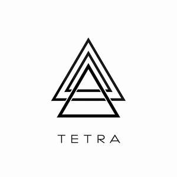

Trade Mark Journal No.2025/013 28 March 2025
UK00004167441 1 March 2025 (15)

- Class 15
- Musical instruments; Instruments (Musical -); Percussion instruments [musical]; Percussion musical instruments; Stringed musical instruments; Woodwind musical instruments; Synthesizers [musical instruments]; Drums [musical instruments]; Flutes being musical instruments; Handbells [musical instruments]; Electronic musical instruments; Basses [musical instruments]; Keyboards for musical instruments; Strings for musical instruments; Mallets for musical instruments; Carillons [musical instruments]; Keyboard instruments [musical]; Recorders [musical instruments]; Organs [musical instruments]; Reeds for musical instruments; Reeds [musical instruments]; Horns [musical instruments]; Cornets [musical instruments]; Mechanical musical instruments; Pedals for musical instruments; Mutes for musical instruments; Mouthpieces for musical instruments; Chimes [musical instruments]; Tuners for musical instruments; Electric musical instruments; Catgut for musical instruments; Parts of musical instruments; Bows for musical instruments; Bellows for musical instruments; Drums [musical instrument]; Keys for musical instruments; Musical instruments for children; Whistles [musical instruments]; Electrical musical instruments; Rattles [musical instruments]; Wind instruments [musical]; Musical wind instruments; Tripods for musical instruments; Pegs for musical instruments; Valves for musical instruments; Dampers for musical instruments; Bridges for musical instruments; Electronic synthesizers being musical instruments; Triangles [musical instruments]; Music rests for musical instruments; Balalaikas [stringed musical instruments]; Picks for stringed musical instruments; Straps for musical instruments; Cases for musical instruments; Electronic keyboards [musical instruments]; Rainmaker [musical instruments]; Stands for musical instruments; Fingerboards for stringed musical instruments; Strings for western musical instruments; Tuners for electronic musical instruments; Electric carillons [musical instruments]; Rosin for stringed musical instruments; Electric keyboards [musical instruments]; Devices for tuning musical instruments; Tuning devices for musical instruments; Tuning apparatus for musical instruments; Colophony for stringed musical instruments; Music stands adapted for use with musical instruments; Electronic practice mutes for musical instruments; Drum pedals [musical instruments]; Musical instrument harnesses; Reeds being parts of musical instruments; Electronic musical apparatus and instruments; Electric and electronic musical instruments; Jews' harps [musical instruments]; Steel drums [musical instruments]; Metal bells [musical instruments]; Tongues [parts of musical instruments]; Musical instrument cases; Electronic musical instrument tuners; Strings for Western style musical instruments; Musical instrument straps; Musical synthesizers; Sound effects pedals for musical instruments; Sound effects machines being musical instruments; Western style musical instruments; Musical instruments in the nature of steel drums; Cases adapted for musical instruments; Japanese traditional musical instruments; Traditional Japanese musical instruments; Sticks for bows for musical instruments; Percussion instruments; Hats with bells [musical instruments]; Mouthpiece caps for musical instruments; Musical instrument stands; Electronic apparatus for synthesising music [musical instrument]; Koto [Japanese stringed musical instruments]; Computer controlled musical instruments; Horsehair for bows for musical instruments; Bow nuts for musical instruments; Electronic melody instruments; Woodwind instruments; Carrying cases for musical instruments; Covers (Shaped -) for musical instruments; Mechanical, electric and electronic musical instruments; Ebonite mouth pieces for musical instruments; Stringed instruments; Electronically operated musical instruments; Electronic musical synthesizers; Musical instruments incorporating arrangements for producing audio signals; Electronic musical keyboards; Musical accessories; Sheng [Chinese musical wind instruments]; Racks adapted to hold musical instruments; Electronic musical apparatus for accompaniment; Keyboard instruments; Erhu (a two-stringed bowed musical instrument); String instruments; Musical instruments incorporating arrangements for modifying audio signals.
Tetra Music Limited